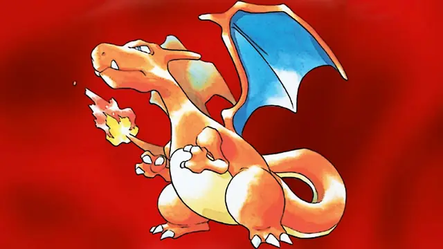
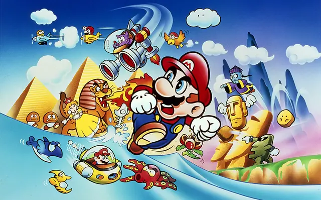
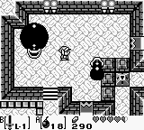
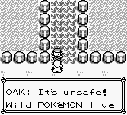
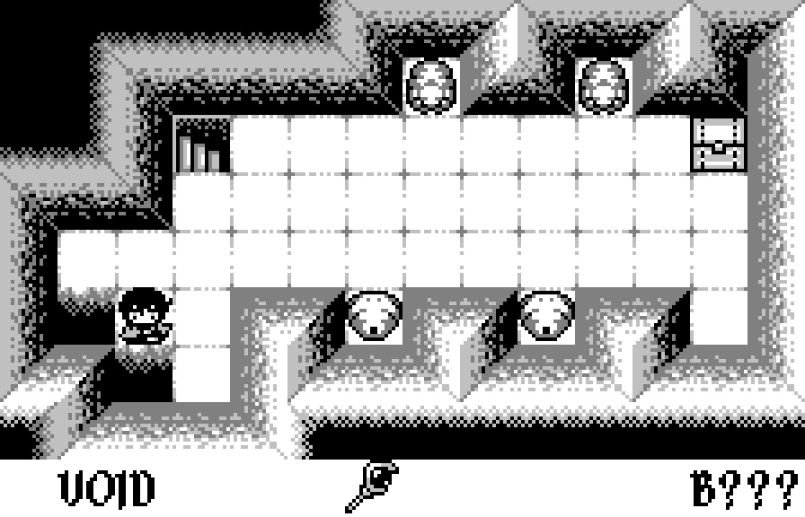
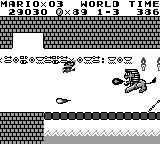

The feel
The Game Boy look is a sprawling adventure seen through a small, murky window.1 Its screen showed four shades of green2 with a sickly tint, and it blurred whenever characters moved quickly.3 People took it to school, to summer camp and into the back seat of the family car.4
Limits do the work. Gunpei Yokoi chose black and white even though colour was possible, because once you start playing, the colours stop mattering. In his words, "the world of a game feels larger when you can use your own imagination".5 Takashi Tezuka wanted Link's Awakening to be small enough in scope to grasp easily, yet deep and distinctive.6
- pocket-sized
- readable
- patient
- warm
- tile-built
- backseat-of-the-car
Where it comes from
Gunpei Yokoi and his team at Nintendo launched the Game Boy in Japan in April 1989.7 Yokoi called his method "lateral thinking with withered technology": think sideways and build from proven, off-the-shelf parts. Where Atari's Lynx had a full-colour screen, the Game Boy's was monochrome.3 Four AA batteries ran it for up to 15 hours, while rival handhelds needed more batteries and drained them far sooner.1 In the West it came with Tetris.3 Link's Awakening (1993) showed it could carry sprawling adventures, and Pokémon (1996) gave it a late boost.1 The look lives on in GB Studio, used for anything from weekend hackathons to games with physical releases,8 in GBJAM's ten days of making Game Boy-inspired games,9 and in new games such as Void Stranger.10
Core elements
Four-shade palette
Every pixel is one of four shades of green,2 and there is no semi-transparency.9 Ken Murfitt, who developed Double Dragon 3 for the Game Boy, could fake in-between greys by flickering, but found it distracting and dithered instead.7
An 8 by 8 tile grid
Backgrounds are built from 8 by 8 pixel tiles,11 20 across and 18 down on a full screen.12 Memory allows so few unique tiles that even GB Studio's smallest background has to repeat about half of them.11
Clearly defined sprites
On a small screen with so few shades, artists worked to keep sprites as clear and defined as possible.1 Sprites get three shades plus transparency,9 and GB Studio draws simple sprites in 16 by 16 frames.13
Shade and context cues
There is no colour to tell the player what hurts and what helps, so shade and context do it. In Super Rad Raygun the enemies that drop health are a lighter shade, and its lead artist points out that one projectile sprite can serve as both water and lava, with context filling in the rest.14
Sparse backgrounds
A few small details on open ground carry the atmosphere. Castlevania on the Game Boy leaves its background close to blank, with scattered two-tile cracks, and with its stone tiles that is enough to evoke the grungy, run-down look of the NES original.14
LCD blur and flicker
The original screen smeared motion. Julian Rignall's 1989 import review praised its sharp graphics but noted blurry scrolling.7 Games put that slowness to use: sprites meant to look see-through were flickered on and off, and the slow LCD hid the flicker.15
How to do it
Set up the canvas
Work at 160 by 144 pixels2 with no more than four colours on screen at once.9 Use four greens such as #071821, #306850, #86c06c and #e0f8cf, from darkest to lightest.11 If you scale the picture up, keep the aspect ratio and square pixels.9
Build scenes from 8 by 8 tiles
Draw on an 8 pixel grid, keep every background a multiple of 8 pixels wide and high, and use a tile map editor to keep it on the grid.11 Budget the unique tiles: video memory holds 384 of them, and an 8-bit tile index lets the background use 256 at once,16 fewer than the 360 that cover a full screen.12 Full-screen pictures are the hard part: Elliot Curtis, who drew Game Boy graphics at Tiertex, never had nearly enough unique tiles for them.1
Separate figure from ground
Super Rad Raygun's lead artist calls keeping foreground and background apart a constant struggle, and his team answered it with contextual clues drawn in the few shades available.14 Sprites have two palettes of their own, which map colour numbers to shades just as the background palette does, except that colour 0 is always transparent.17
Dither the gradients
For in-between tones, dither. Flickering between shades also works, but Ken Murfitt found it visually distracting.7 For see-through effects the original games flickered sprites on and off, which the slow LCD hid and a modern screen shows clearly.15
Animate with few frames
A walk cycle can get by on six frames: two facing forward, two facing up and two facing right, with the right-facing frames flipped for left.13 The hardware can mirror any sprite horizontally.18 In top-down scenes, move the player on an 8 pixel grid.12 The hardware shows up to 40 sprites, each 8 by 8 or 8 by 16, and only 10 on one line.2
Choose which limits to keep
Modern engines allow more. Super Rad Raygun used more and bigger sprites than a Game Boy could show, which made its levels and characters more detailed and easier to read.14 Apart from 160 by 144 and four colours, GBJAM does not hold entries to the hardware's restrictions.9
Write for four sound channels
Write for four channels: two pulse channels with four fixed pulse widths, a wave channel that plays a wave you supply, and a noise channel.19 The 25% and 75% pulse widths sound the same, and the wave is 32 samples of 4 bits each.20 The two pulse channels and the noise channel can each have a volume envelope that rises or falls over time.19
Cheat sheet
Do
- Repeat tiles between scenes where you can, to save space.11
- Leave backgrounds nearly bare and let a few small details set the mood, like the two-tile cracks in Game Boy Castlevania.14
- Dither for in-between tones instead of flickering between shades.7
- Draw in greys and tint at the end. Super Rad Raygun's team tinted everything green with a shader and laid a pixel grid over the result.14
Avoid
- Semi-transparent blends. The Game Boy has no semi-opacity, and a blended shade counts as a fifth colour.9
- Stretching the picture to fit a screen. Scale it only in ways that keep the aspect ratio and square pixels.9
- Detailed full-screen art. Elliot Curtis found title screens a headache and had to butcher pictures to make them work.1
- Flicker-based transparency in a game for modern screens. The original LCD hid the flicker, and a modern screen shows it clearly.15
Tools and tutorials
- GB Studio
A drag and drop game creator that builds real ROM files.8
- Pan Docs
The hardware bible: tiles, sprites, palettes and timing.
- Lospec: Nintendo Game Boy palette
Common hex values for the original screen.
- hUGETracker
A tracker for Game Boy music. GB Studio's .uge songs open in it.21
- LSDj
A Game Boy music sequencer. Run it in an emulator, or on a real Game Boy from a flash cartridge.22
Palette
The first four are the screen. The last two only belong to the console around it, and this page. Press SELECT on the control pad to try the Pocket and Light screens.
Feel the vibe
In motion
Listen
Tanaka wanted to keep his image of Tetris on the Mac, then kept adding ideas of his own.23
YouTubeStudy how much orchestral ambition fits into four channels.19
YouTubeThe cosy, slightly melancholy side of the style.
YouTubeOne hour loop. Tanaka wrote the Mario Land music while also designing the sound inside the Game Boy.23
YouTubeAn LSDj chiptune, as its title says. Compare it with the 1989 originals above.
YouTube
More references






Games
- Tetris
Elliot Curtis puts it plainly: Tetris shifted the units in the first place.1
- The Legend of Zelda: Link's Awakening
Study how its island reuses tiles. Tezuka wanted a world small enough to grasp, yet deep and distinctive.6
- Pokémon Red and Blue
Study its text boxes and menus as a visual language of their own.
- Super Mario Land
A Japanese launch title.7 Study its small sprites against wide, open backgrounds.
- Kirby's Dream Land
Study how a round hero with a dark outline stays readable at speed.
- Metroid II: Return of Samus
Study how dark, tight caves make the small screen feel claustrophobic.
- Void Stranger
A monochrome, Game Boy-styled block puzzler.10
- Super Rad Raygun
Drawn in greyscale, then tinted green with a shader under a pixel grid; enemies in a lighter shade drop health.14
Film, art and more
- Game Boy
The original model. Study its screen and limits, which shape everything on this page.
- Game Boy Camera
Hip Tanaka made it, and put a music sequencer inside.23
- Gunpei Yokoi
His "lateral thinking with withered technology": think sideways, and build from proven, off-the-shelf parts.3
- Chiptune
Artists around the world still make music primarily on a Game Boy.23
Sources
- 130 years of Game Boy: How Nintendo's modest handheld became a such a massive success (page 2)
- 2Pan Docs: Specifications
- 3How Gunpei Yokoi Reinvented Nintendo
- 4Nintendo Game Boy
- 5Gunpei Yokoi x Yukihito Morikawa – 1997 Developer Interview
- 6Iwata Asks: The History of Handheld The Legend of Zelda Games, Make All the Characters Suspicious Types
- 730 years of Game Boy: How Nintendo's modest handheld became a such a massive success
- 8GB Studio
- 9GBJAM 13
- 10A seemingly innocent puzzle game is hiding what might be the most subversive, fourth-wall-breaking adventure since Undertale
- 11GB Studio Documentation: Backgrounds
- 12GB Studio Documentation: Scene Types
- 13GB Studio Documentation: Sprites
- 14Super Rad Raygun's self-imposed constraint: a 2-bit color palette
- 15Why Game Boy IPS Screens Flicker
- 16Pan Docs: VRAM Tile Data
- 17Pan Docs: Palettes
- 18Pan Docs: Object Attribute Memory (OAM)
- 19Pan Docs: Audio Overview
- 20Pan Docs: Audio Registers
- 21GB Studio Documentation: Music Editor
- 22Little Sound Dj
- 23Hip Tanaka